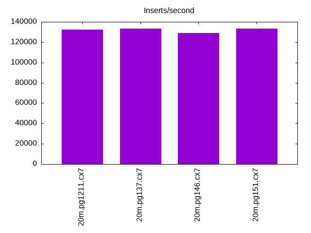
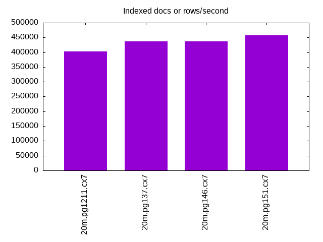
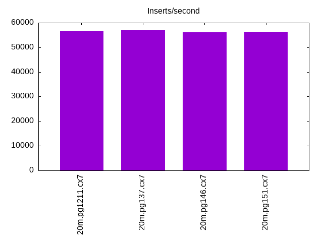
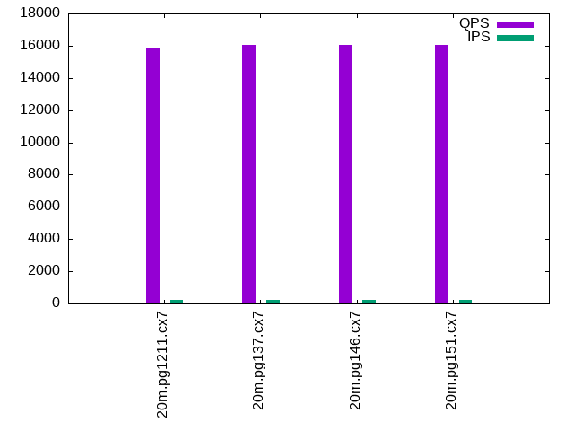
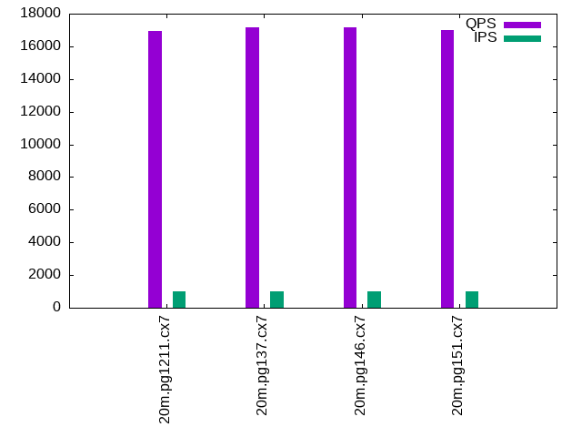
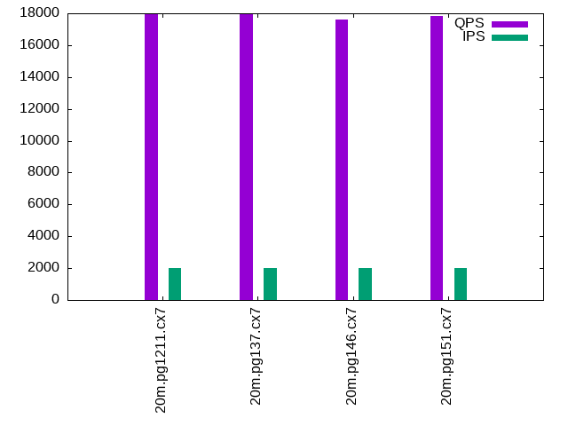

This is a report for the insert benchmark with 20M docs and 2 client(s). It is generated by scripts (bash, awk, sed) and Tufte might not be impressed. An overview of the insert benchmark is here and a short update is here. Below, by DBMS, I mean DBMS+version.config. An example is my8020.c10b40 where my means MySQL, 8020 is version 8.0.20 and c10b40 is the name for the configuration file.
The test server has 8 AMD cores, 16G RAM and an NVMe SSD. It is described here. The benchmark was run with 2 clients and there were 1 or 2 connections per client (1 for queries, 1 for inserts). The benchmark loads 20M rows without secondary indexes, creates secondary indexes, loads another 20M rows then does 3 read+write tests for one hour each that do queries as fast as possible with 100, 500 and then 1000 writes/second/client concurrent with the queries. The database is cached by the storage engine and the only IO is for writes. Clients and the DBMS share one server. The per-database configs are in the per-database subdirectories here.
The tested DBMS are:
The numbers are inserts/s for l.i0 and l.i1, indexed docs (or rows) /s for l.x and queries/s for q*.2. The values are the average rate over the entire test for inserts (IPS) and queries (QPS). The range of values for IPS and QPS is split into 3 parts: bottom 25%, middle 50%, top 25%. Values in the bottom 25% have a red background, values in the top 25% have a green background and values in the middle have no color. A gray background is used for values that can be ignored because the DBMS did not sustain the target insert rate. Red backgrounds are not used when the minimum value is within 80% of the max value.
| dbms | l.i0 | l.x | l.i1 | q100.1 | q500.1 | q1000.1 |
|---|---|---|---|---|---|---|
| 20m.pg1211.cx7 | 132450 | 402000 | 56657 | 15847 | 16959 | 17953 |
| 20m.pg137.cx7 | 133333 | 436956 | 56980 | 16050 | 17187 | 17967 |
| 20m.pg146.cx7 | 129032 | 436956 | 56022 | 16065 | 17169 | 17637 |
| 20m.pg151.cx7 | 133333 | 456818 | 56338 | 16047 | 16974 | 17838 |
This lists the average rate of inserts/s for the tests that do inserts concurrent with queries. For such tests the query rate is listed in the table above. The read+write tests are setup so that the insert rate should match the target rate every second. Cells that are not at least 95% of the target have a red background to indicate a failure to satisfy the target.
| dbms | q100.1 | q500.1 | q1000.1 |
|---|---|---|---|
| pg1211.cx7 | 200 | 999 | 1997 |
| pg137.cx7 | 200 | 999 | 1997 |
| pg146.cx7 | 200 | 999 | 1997 |
| pg151.cx7 | 200 | 999 | 1997 |
| target | 200 | 1000 | 2000 |
l.i0: load without secondary indexes. Graphs for performance per 1-second interval are here.
Average throughput:
Insert response time histogram: each cell has the percentage of responses that take <= the time in the header and max is the max response time in seconds. For the max column values in the top 25% of the range have a red background and in the bottom 25% of the range have a green background. The red background is not used when the min value is within 80% of the max value.
| dbms | 256us | 1ms | 4ms | 16ms | 64ms | 256ms | 1s | 4s | 16s | gt | max |
|---|---|---|---|---|---|---|---|---|---|---|---|
| pg1211.cx7 | 100.000 | 0.004 | |||||||||
| pg137.cx7 | 100.000 | 0.003 | |||||||||
| pg146.cx7 | 100.000 | 0.003 | |||||||||
| pg151.cx7 | 100.000 | 0.004 |
Performance metrics for the DBMS listed above. Some are normalized by throughput, others are not. Legend for results is here.
ips qps rps rmbps wps wmbps rpq rkbpq wpi wkbpi csps cpups cspq cpupq dbgb1 dbgb2 rss maxop p50 p99 tag 132450 0 0 0.0 266.7 56.1 0.000 0.000 0.002 0.434 15557 40.8 0.117 25 1.9 5.2 0.0 0.004 71122 38057 20m.pg1211.cx7 133333 0 0 0.0 266.6 56.4 0.000 0.000 0.002 0.433 15664 40.9 0.117 25 1.9 5.2 0.0 0.003 71422 61231 20m.pg137.cx7 129032 0 0 0.0 261.3 55.3 0.000 0.000 0.002 0.439 15343 41.5 0.119 26 1.9 5.2 0.0 0.003 69522 60034 20m.pg146.cx7 133333 0 0 0.0 266.3 56.1 0.000 0.000 0.002 0.431 15633 40.9 0.117 25 1.9 5.2 0.0 0.004 71623 29080 20m.pg151.cx7
l.x: create secondary indexes.
Average throughput:
Performance metrics for the DBMS listed above. Some are normalized by throughput, others are not. Legend for results is here.
ips qps rps rmbps wps wmbps rpq rkbpq wpi wkbpi csps cpups cspq cpupq dbgb1 dbgb2 rss maxop p50 p99 tag 402000 0 0 0.0 459.3 111.3 0.000 0.000 0.001 0.283 1780 21.0 0.004 4 3.7 8.6 0.0 0.004 NA NA 20m.pg1211.cx7 436956 0 0 0.0 444.5 107.8 0.000 0.000 0.001 0.253 1715 22.5 0.004 4 3.7 8.6 0.0 0.004 NA NA 20m.pg137.cx7 436956 0 0 0.0 464.5 112.6 0.000 0.000 0.001 0.264 1760 21.9 0.004 4 3.7 8.6 0.0 0.004 NA NA 20m.pg146.cx7 456818 0 0 0.0 352.1 85.1 0.000 0.000 0.001 0.191 1511 22.4 0.003 4 3.7 8.6 0.0 0.004 NA NA 20m.pg151.cx7
l.i1: continue load after secondary indexes created. Graphs for performance per 1-second interval are here.
Average throughput:
Insert response time histogram: each cell has the percentage of responses that take <= the time in the header and max is the max response time in seconds. For the max column values in the top 25% of the range have a red background and in the bottom 25% of the range have a green background. The red background is not used when the min value is within 80% of the max value.
| dbms | 256us | 1ms | 4ms | 16ms | 64ms | 256ms | 1s | 4s | 16s | gt | max |
|---|---|---|---|---|---|---|---|---|---|---|---|
| pg1211.cx7 | 99.928 | 0.045 | 0.026 | 0.002 | 0.073 | ||||||
| pg137.cx7 | 99.955 | 0.040 | 0.005 | 0.021 | |||||||
| pg146.cx7 | 99.959 | 0.036 | 0.005 | 0.022 | |||||||
| pg151.cx7 | 99.932 | 0.040 | 0.027 | 0.001 | 0.076 |
Performance metrics for the DBMS listed above. Some are normalized by throughput, others are not. Legend for results is here.
ips qps rps rmbps wps wmbps rpq rkbpq wpi wkbpi csps cpups cspq cpupq dbgb1 dbgb2 rss maxop p50 p99 tag 56657 0 0 0.0 387.6 81.6 0.000 0.000 0.007 1.475 13754 35.6 0.243 50 7.5 20.0 0.0 0.073 29518 14734 20m.pg1211.cx7 56980 0 0 0.0 396.8 83.5 0.000 0.000 0.007 1.501 13806 35.6 0.242 50 7.5 20.3 0.0 0.021 29529 16182 20m.pg137.cx7 56022 0 0 0.0 409.7 87.0 0.000 0.000 0.007 1.591 13737 36.0 0.245 51 7.5 22.9 0.0 0.022 28868 19031 20m.pg146.cx7 56338 0 0 0.0 411.6 87.6 0.000 0.000 0.007 1.592 13740 35.9 0.244 51 7.5 22.9 0.0 0.076 29268 14789 20m.pg151.cx7
q100.1: range queries with 100 insert/s per client. Graphs for performance per 1-second interval are here.
Average throughput:
Query response time histogram: each cell has the percentage of responses that take <= the time in the header and max is the max response time in seconds. For max values in the top 25% of the range have a red background and in the bottom 25% of the range have a green background. The red background is not used when the min value is within 80% of the max value.
| dbms | 256us | 1ms | 4ms | 16ms | 64ms | 256ms | 1s | 4s | 16s | gt | max |
|---|---|---|---|---|---|---|---|---|---|---|---|
| pg1211.cx7 | 99.909 | 0.090 | 0.001 | nonzero | 0.005 | ||||||
| pg137.cx7 | 99.916 | 0.083 | 0.001 | nonzero | 0.005 | ||||||
| pg146.cx7 | 99.905 | 0.093 | 0.001 | nonzero | 0.005 | ||||||
| pg151.cx7 | 99.924 | 0.074 | 0.001 | nonzero | 0.005 |
Insert response time histogram: each cell has the percentage of responses that take <= the time in the header and max is the max response time in seconds. For max values in the top 25% of the range have a red background and in the bottom 25% of the range have a green background. The red background is not used when the min value is within 80% of the max value.
| dbms | 256us | 1ms | 4ms | 16ms | 64ms | 256ms | 1s | 4s | 16s | gt | max |
|---|---|---|---|---|---|---|---|---|---|---|---|
| pg1211.cx7 | 99.854 | 0.146 | 0.007 | ||||||||
| pg137.cx7 | 99.882 | 0.118 | 0.006 | ||||||||
| pg146.cx7 | 99.819 | 0.181 | 0.006 | ||||||||
| pg151.cx7 | 99.882 | 0.118 | 0.008 |
Performance metrics for the DBMS listed above. Some are normalized by throughput, others are not. Legend for results is here.
ips qps rps rmbps wps wmbps rpq rkbpq wpi wkbpi csps cpups cspq cpupq dbgb1 dbgb2 rss maxop p50 p99 tag 200 15847 0 0.0 327.6 8.8 0.000 0.000 1.640 45.349 60877 26.6 3.842 134 7.6 13.7 0.0 0.005 7655 7527 20m.pg1211.cx7 200 16050 0 0.0 327.8 8.4 0.000 0.000 1.641 42.975 61656 26.4 3.842 132 7.7 12.9 0.0 0.005 7756 7624 20m.pg137.cx7 200 16065 0 0.0 313.4 8.1 0.000 0.000 1.570 41.649 61649 26.0 3.837 129 7.7 14.8 0.0 0.005 7767 7639 20m.pg146.cx7 200 16047 0 0.0 314.1 8.1 0.000 0.000 1.574 41.585 61558 26.2 3.836 131 7.7 14.8 0.0 0.005 7659 7543 20m.pg151.cx7
q500.1: range queries with 500 insert/s per client. Graphs for performance per 1-second interval are here.
Average throughput:
Query response time histogram: each cell has the percentage of responses that take <= the time in the header and max is the max response time in seconds. For max values in the top 25% of the range have a red background and in the bottom 25% of the range have a green background. The red background is not used when the min value is within 80% of the max value.
| dbms | 256us | 1ms | 4ms | 16ms | 64ms | 256ms | 1s | 4s | 16s | gt | max |
|---|---|---|---|---|---|---|---|---|---|---|---|
| pg1211.cx7 | 99.872 | 0.121 | 0.007 | nonzero | nonzero | 0.058 | |||||
| pg137.cx7 | 99.876 | 0.117 | 0.007 | nonzero | nonzero | 0.039 | |||||
| pg146.cx7 | 99.852 | 0.141 | 0.007 | nonzero | nonzero | 0.050 | |||||
| pg151.cx7 | 99.870 | 0.123 | 0.007 | nonzero | 0.006 |
Insert response time histogram: each cell has the percentage of responses that take <= the time in the header and max is the max response time in seconds. For max values in the top 25% of the range have a red background and in the bottom 25% of the range have a green background. The red background is not used when the min value is within 80% of the max value.
| dbms | 256us | 1ms | 4ms | 16ms | 64ms | 256ms | 1s | 4s | 16s | gt | max |
|---|---|---|---|---|---|---|---|---|---|---|---|
| pg1211.cx7 | 99.615 | 0.363 | 0.021 | 0.001 | 0.075 | ||||||
| pg137.cx7 | 99.608 | 0.364 | 0.028 | 0.055 | |||||||
| pg146.cx7 | 99.539 | 0.417 | 0.044 | 0.060 | |||||||
| pg151.cx7 | 99.760 | 0.232 | 0.008 | 0.022 |
Performance metrics for the DBMS listed above. Some are normalized by throughput, others are not. Legend for results is here.
ips qps rps rmbps wps wmbps rpq rkbpq wpi wkbpi csps cpups cspq cpupq dbgb1 dbgb2 rss maxop p50 p99 tag 999 16959 0 0.0 436.4 20.0 0.000 0.000 0.437 20.541 65323 27.2 3.852 128 9.3 14.4 0.0 0.058 8135 7531 20m.pg1211.cx7 999 17187 0 0.0 443.0 20.2 0.000 0.000 0.444 20.672 66181 27.2 3.851 127 9.3 14.1 0.0 0.039 8311 7640 20m.pg137.cx7 999 17169 0 0.0 458.4 19.1 0.000 0.000 0.459 19.577 66056 26.8 3.847 125 9.3 15.4 0.0 0.050 8263 7639 20m.pg146.cx7 999 16974 0 0.0 459.5 19.1 0.000 0.000 0.460 19.553 65297 26.7 3.847 126 9.3 15.4 0.0 0.006 8138 7486 20m.pg151.cx7
q1000.1: range queries with 1000 insert/s per client. Graphs for performance per 1-second interval are here.
Average throughput:
Query response time histogram: each cell has the percentage of responses that take <= the time in the header and max is the max response time in seconds. For max values in the top 25% of the range have a red background and in the bottom 25% of the range have a green background. The red background is not used when the min value is within 80% of the max value.
| dbms | 256us | 1ms | 4ms | 16ms | 64ms | 256ms | 1s | 4s | 16s | gt | max |
|---|---|---|---|---|---|---|---|---|---|---|---|
| pg1211.cx7 | 99.855 | 0.134 | 0.011 | nonzero | nonzero | 0.040 | |||||
| pg137.cx7 | 99.852 | 0.137 | 0.011 | nonzero | nonzero | nonzero | 0.073 | ||||
| pg146.cx7 | 99.814 | 0.174 | 0.011 | nonzero | nonzero | 0.020 | |||||
| pg151.cx7 | 99.834 | 0.155 | 0.011 | nonzero | nonzero | 0.050 |
Insert response time histogram: each cell has the percentage of responses that take <= the time in the header and max is the max response time in seconds. For max values in the top 25% of the range have a red background and in the bottom 25% of the range have a green background. The red background is not used when the min value is within 80% of the max value.
| dbms | 256us | 1ms | 4ms | 16ms | 64ms | 256ms | 1s | 4s | 16s | gt | max |
|---|---|---|---|---|---|---|---|---|---|---|---|
| pg1211.cx7 | 97.998 | 1.923 | 0.074 | 0.006 | 0.133 | ||||||
| pg137.cx7 | 96.847 | 3.026 | 0.119 | 0.007 | 0.150 | ||||||
| pg146.cx7 | 96.449 | 3.447 | 0.099 | 0.005 | 0.149 | ||||||
| pg151.cx7 | 96.435 | 3.454 | 0.104 | 0.007 | 0.135 |
Performance metrics for the DBMS listed above. Some are normalized by throughput, others are not. Legend for results is here.
ips qps rps rmbps wps wmbps rpq rkbpq wpi wkbpi csps cpups cspq cpupq dbgb1 dbgb2 rss maxop p50 p99 tag 1997 17953 11 0.1 517.5 28.6 0.001 0.008 0.259 14.639 69369 28.0 3.864 125 12.0 17.5 0.0 0.040 8806 7687 20m.pg1211.cx7 1997 17967 11 0.1 516.1 28.7 0.001 0.007 0.258 14.694 69429 28.1 3.864 125 12.0 17.5 0.0 0.073 8742 7723 20m.pg137.cx7 1997 17637 11 0.1 575.4 26.0 0.001 0.005 0.288 13.332 68094 27.5 3.861 125 12.0 18.7 0.0 0.020 8379 7591 20m.pg146.cx7 1997 17838 11 0.1 573.6 26.0 0.001 0.005 0.287 13.350 68821 27.5 3.858 123 12.0 18.7 0.0 0.050 8790 7623 20m.pg151.cx7
l.i0: load without secondary indexes
Performance metrics for all DBMS, not just the ones listed above. Some are normalized by throughput, others are not. Legend for results is here.
ips qps rps rmbps wps wmbps rpq rkbpq wpi wkbpi csps cpups cspq cpupq dbgb1 dbgb2 rss maxop p50 p99 tag 132450 0 0 0.0 266.7 56.1 0.000 0.000 0.002 0.434 15557 40.8 0.117 25 1.9 5.2 0.0 0.004 71122 38057 20m.pg1211.cx7 133333 0 0 0.0 266.6 56.4 0.000 0.000 0.002 0.433 15664 40.9 0.117 25 1.9 5.2 0.0 0.003 71422 61231 20m.pg137.cx7 129032 0 0 0.0 261.3 55.3 0.000 0.000 0.002 0.439 15343 41.5 0.119 26 1.9 5.2 0.0 0.003 69522 60034 20m.pg146.cx7 133333 0 0 0.0 266.3 56.1 0.000 0.000 0.002 0.431 15633 40.9 0.117 25 1.9 5.2 0.0 0.004 71623 29080 20m.pg151.cx7
l.x: create secondary indexes
Performance metrics for all DBMS, not just the ones listed above. Some are normalized by throughput, others are not. Legend for results is here.
ips qps rps rmbps wps wmbps rpq rkbpq wpi wkbpi csps cpups cspq cpupq dbgb1 dbgb2 rss maxop p50 p99 tag 402000 0 0 0.0 459.3 111.3 0.000 0.000 0.001 0.283 1780 21.0 0.004 4 3.7 8.6 0.0 0.004 NA NA 20m.pg1211.cx7 436956 0 0 0.0 444.5 107.8 0.000 0.000 0.001 0.253 1715 22.5 0.004 4 3.7 8.6 0.0 0.004 NA NA 20m.pg137.cx7 436956 0 0 0.0 464.5 112.6 0.000 0.000 0.001 0.264 1760 21.9 0.004 4 3.7 8.6 0.0 0.004 NA NA 20m.pg146.cx7 456818 0 0 0.0 352.1 85.1 0.000 0.000 0.001 0.191 1511 22.4 0.003 4 3.7 8.6 0.0 0.004 NA NA 20m.pg151.cx7
l.i1: continue load after secondary indexes created
Performance metrics for all DBMS, not just the ones listed above. Some are normalized by throughput, others are not. Legend for results is here.
ips qps rps rmbps wps wmbps rpq rkbpq wpi wkbpi csps cpups cspq cpupq dbgb1 dbgb2 rss maxop p50 p99 tag 56657 0 0 0.0 387.6 81.6 0.000 0.000 0.007 1.475 13754 35.6 0.243 50 7.5 20.0 0.0 0.073 29518 14734 20m.pg1211.cx7 56980 0 0 0.0 396.8 83.5 0.000 0.000 0.007 1.501 13806 35.6 0.242 50 7.5 20.3 0.0 0.021 29529 16182 20m.pg137.cx7 56022 0 0 0.0 409.7 87.0 0.000 0.000 0.007 1.591 13737 36.0 0.245 51 7.5 22.9 0.0 0.022 28868 19031 20m.pg146.cx7 56338 0 0 0.0 411.6 87.6 0.000 0.000 0.007 1.592 13740 35.9 0.244 51 7.5 22.9 0.0 0.076 29268 14789 20m.pg151.cx7
q100.1: range queries with 100 insert/s per client
Performance metrics for all DBMS, not just the ones listed above. Some are normalized by throughput, others are not. Legend for results is here.
ips qps rps rmbps wps wmbps rpq rkbpq wpi wkbpi csps cpups cspq cpupq dbgb1 dbgb2 rss maxop p50 p99 tag 200 15847 0 0.0 327.6 8.8 0.000 0.000 1.640 45.349 60877 26.6 3.842 134 7.6 13.7 0.0 0.005 7655 7527 20m.pg1211.cx7 200 16050 0 0.0 327.8 8.4 0.000 0.000 1.641 42.975 61656 26.4 3.842 132 7.7 12.9 0.0 0.005 7756 7624 20m.pg137.cx7 200 16065 0 0.0 313.4 8.1 0.000 0.000 1.570 41.649 61649 26.0 3.837 129 7.7 14.8 0.0 0.005 7767 7639 20m.pg146.cx7 200 16047 0 0.0 314.1 8.1 0.000 0.000 1.574 41.585 61558 26.2 3.836 131 7.7 14.8 0.0 0.005 7659 7543 20m.pg151.cx7
q500.1: range queries with 500 insert/s per client
Performance metrics for all DBMS, not just the ones listed above. Some are normalized by throughput, others are not. Legend for results is here.
ips qps rps rmbps wps wmbps rpq rkbpq wpi wkbpi csps cpups cspq cpupq dbgb1 dbgb2 rss maxop p50 p99 tag 999 16959 0 0.0 436.4 20.0 0.000 0.000 0.437 20.541 65323 27.2 3.852 128 9.3 14.4 0.0 0.058 8135 7531 20m.pg1211.cx7 999 17187 0 0.0 443.0 20.2 0.000 0.000 0.444 20.672 66181 27.2 3.851 127 9.3 14.1 0.0 0.039 8311 7640 20m.pg137.cx7 999 17169 0 0.0 458.4 19.1 0.000 0.000 0.459 19.577 66056 26.8 3.847 125 9.3 15.4 0.0 0.050 8263 7639 20m.pg146.cx7 999 16974 0 0.0 459.5 19.1 0.000 0.000 0.460 19.553 65297 26.7 3.847 126 9.3 15.4 0.0 0.006 8138 7486 20m.pg151.cx7
q1000.1: range queries with 1000 insert/s per client
Performance metrics for all DBMS, not just the ones listed above. Some are normalized by throughput, others are not. Legend for results is here.
ips qps rps rmbps wps wmbps rpq rkbpq wpi wkbpi csps cpups cspq cpupq dbgb1 dbgb2 rss maxop p50 p99 tag 1997 17953 11 0.1 517.5 28.6 0.001 0.008 0.259 14.639 69369 28.0 3.864 125 12.0 17.5 0.0 0.040 8806 7687 20m.pg1211.cx7 1997 17967 11 0.1 516.1 28.7 0.001 0.007 0.258 14.694 69429 28.1 3.864 125 12.0 17.5 0.0 0.073 8742 7723 20m.pg137.cx7 1997 17637 11 0.1 575.4 26.0 0.001 0.005 0.288 13.332 68094 27.5 3.861 125 12.0 18.7 0.0 0.020 8379 7591 20m.pg146.cx7 1997 17838 11 0.1 573.6 26.0 0.001 0.005 0.287 13.350 68821 27.5 3.858 123 12.0 18.7 0.0 0.050 8790 7623 20m.pg151.cx7
Insert response time histogram
256us 1ms 4ms 16ms 64ms 256ms 1s 4s 16s gt max tag 0.000 0.000 100.000 0.000 0.000 0.000 0.000 0.000 0.000 0.000 0.004 pg1211.cx7 0.000 0.000 100.000 0.000 0.000 0.000 0.000 0.000 0.000 0.000 0.003 pg137.cx7 0.000 0.000 100.000 0.000 0.000 0.000 0.000 0.000 0.000 0.000 0.003 pg146.cx7 0.000 0.000 100.000 0.000 0.000 0.000 0.000 0.000 0.000 0.000 0.004 pg151.cx7
TODO - determine whether there is data for create index response time
Insert response time histogram
256us 1ms 4ms 16ms 64ms 256ms 1s 4s 16s gt max tag 0.000 0.000 99.928 0.045 0.026 0.002 0.000 0.000 0.000 0.000 0.073 pg1211.cx7 0.000 0.000 99.955 0.040 0.005 0.000 0.000 0.000 0.000 0.000 0.021 pg137.cx7 0.000 0.000 99.959 0.036 0.005 0.000 0.000 0.000 0.000 0.000 0.022 pg146.cx7 0.000 0.000 99.932 0.040 0.027 0.001 0.000 0.000 0.000 0.000 0.076 pg151.cx7
Query response time histogram
256us 1ms 4ms 16ms 64ms 256ms 1s 4s 16s gt max tag 99.909 0.090 0.001 nonzero 0.000 0.000 0.000 0.000 0.000 0.000 0.005 pg1211.cx7 99.916 0.083 0.001 nonzero 0.000 0.000 0.000 0.000 0.000 0.000 0.005 pg137.cx7 99.905 0.093 0.001 nonzero 0.000 0.000 0.000 0.000 0.000 0.000 0.005 pg146.cx7 99.924 0.074 0.001 nonzero 0.000 0.000 0.000 0.000 0.000 0.000 0.005 pg151.cx7
Insert response time histogram
256us 1ms 4ms 16ms 64ms 256ms 1s 4s 16s gt max tag 0.000 0.000 99.854 0.146 0.000 0.000 0.000 0.000 0.000 0.000 0.007 pg1211.cx7 0.000 0.000 99.882 0.118 0.000 0.000 0.000 0.000 0.000 0.000 0.006 pg137.cx7 0.000 0.000 99.819 0.181 0.000 0.000 0.000 0.000 0.000 0.000 0.006 pg146.cx7 0.000 0.000 99.882 0.118 0.000 0.000 0.000 0.000 0.000 0.000 0.008 pg151.cx7
Query response time histogram
256us 1ms 4ms 16ms 64ms 256ms 1s 4s 16s gt max tag 99.872 0.121 0.007 nonzero nonzero 0.000 0.000 0.000 0.000 0.000 0.058 pg1211.cx7 99.876 0.117 0.007 nonzero nonzero 0.000 0.000 0.000 0.000 0.000 0.039 pg137.cx7 99.852 0.141 0.007 nonzero nonzero 0.000 0.000 0.000 0.000 0.000 0.050 pg146.cx7 99.870 0.123 0.007 nonzero 0.000 0.000 0.000 0.000 0.000 0.000 0.006 pg151.cx7
Insert response time histogram
256us 1ms 4ms 16ms 64ms 256ms 1s 4s 16s gt max tag 0.000 0.000 99.615 0.363 0.021 0.001 0.000 0.000 0.000 0.000 0.075 pg1211.cx7 0.000 0.000 99.608 0.364 0.028 0.000 0.000 0.000 0.000 0.000 0.055 pg137.cx7 0.000 0.000 99.539 0.417 0.044 0.000 0.000 0.000 0.000 0.000 0.060 pg146.cx7 0.000 0.000 99.760 0.232 0.008 0.000 0.000 0.000 0.000 0.000 0.022 pg151.cx7
Query response time histogram
256us 1ms 4ms 16ms 64ms 256ms 1s 4s 16s gt max tag 99.855 0.134 0.011 nonzero nonzero 0.000 0.000 0.000 0.000 0.000 0.040 pg1211.cx7 99.852 0.137 0.011 nonzero nonzero nonzero 0.000 0.000 0.000 0.000 0.073 pg137.cx7 99.814 0.174 0.011 nonzero nonzero 0.000 0.000 0.000 0.000 0.000 0.020 pg146.cx7 99.834 0.155 0.011 nonzero nonzero 0.000 0.000 0.000 0.000 0.000 0.050 pg151.cx7
Insert response time histogram
256us 1ms 4ms 16ms 64ms 256ms 1s 4s 16s gt max tag 0.000 0.000 97.998 1.923 0.074 0.006 0.000 0.000 0.000 0.000 0.133 pg1211.cx7 0.000 0.000 96.847 3.026 0.119 0.007 0.000 0.000 0.000 0.000 0.150 pg137.cx7 0.000 0.000 96.449 3.447 0.099 0.005 0.000 0.000 0.000 0.000 0.149 pg146.cx7 0.000 0.000 96.435 3.454 0.104 0.007 0.000 0.000 0.000 0.000 0.135 pg151.cx7